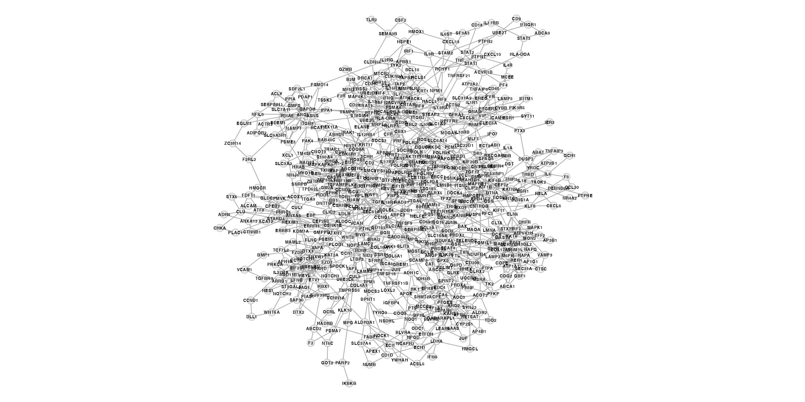
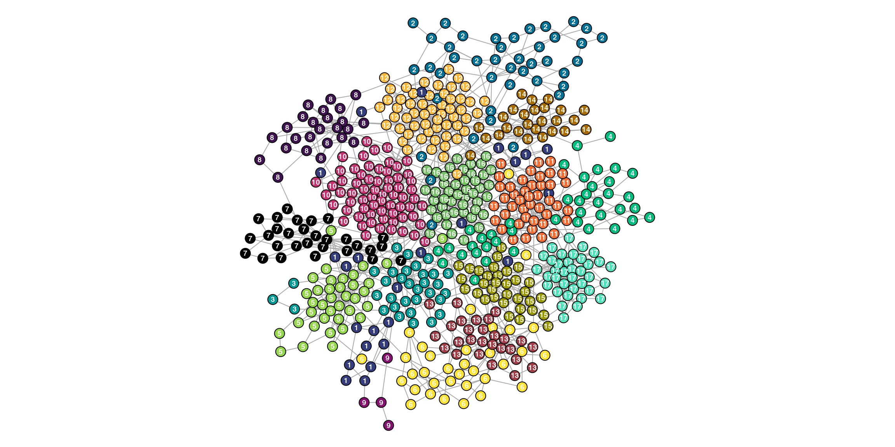

To get a sense of how this works, there is a simulated network with modular scale-free properties available. The object already has pre-defined communities that have been populated with genes from highly specific biological pathways. This data was generated through the following steps:
data(ig)This package works with undirected igraph objects or extensions of igraph objects.
is(ig)[1] "igraph"
set.seed(1)
layout <- igraph::layout_with_graphopt(ig,
start=NULL,
niter=1000,
charge=0.005,
mass=30,
spring.length=0,
spring.constant=1,
max.sa.movement=5)
par(mar=c(0,0,0,0))
plot(ig,
vertex.size=4,
vertex.color="#EEEEEE",
vertex.frame.color=adjustcolor("#000000", alpha.f=0.2),
vertex.label=V(ig)$symbol,
vertex.label.family="Helvetica",
vertex.label.color="black",
vertex.label.font=2,
vertex.label.cex=0.4,
vertex.label.dist=0,
edge.width=1,
layout=layout)
You need to perform some type of community detection. There are many algorithms but I prefer defining community structure through random walks. Walktrap looks for densely connected subgraphs through random walks at varying lengths. Whatever algorithm you use, make sure to label the nodes with their designated community through V(ig)$community.
set.seed(1)
ig.c <- igraph::walktrap.community(ig, steps=10)
V(ig)$community <- ig.c$membership
table(V(ig)$community)
1 2 3 4 5 6 7 8 9 10 11 12 13 14 15 16 17
24 42 33 41 37 34 29 25 4 66 43 55 27 26 33 45 36 The following vertex attributes are expected at a minimum.
name - Unique node labelssymbol - Node symbols corresponding to the genesets you usecommunity- Pre-detected community labelscolor - Community-specific colors
head(igraph::as_data_frame(ig, what="vertices")) community color symbol name
GMPS 8 #3E134F GMPS GMPS
PDLIM1 15 #9A9800 PDLIM1 PDLIM1
JUNB 15 #9A9800 JUNB JUNB
RER1 17 #50E2BB RER1 RER1
ICAM1 14 #A96C00 ICAM1 ICAM1
NPFFR2 14 #A96C00 NPFFR2 NPFFR2We can visualize the communities which seem well-defined. Not surprisingly since this example data was defined to be particularly modular for demonstration purposes.
par(mar=c(0,0,0,0))
plot(ig,
vertex.size=5,
vertex.label=V(ig)$community,
vertex.label.family="Helvetica",
vertex.label.color="white",
vertex.label.font=2,
vertex.label.cex=0.6,
vertex.label.dist=0,
edge.width=1,
layout=layout)